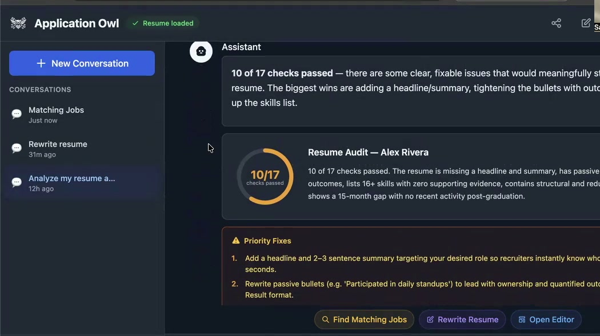
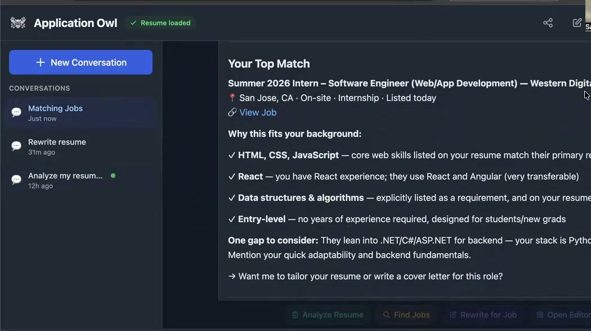
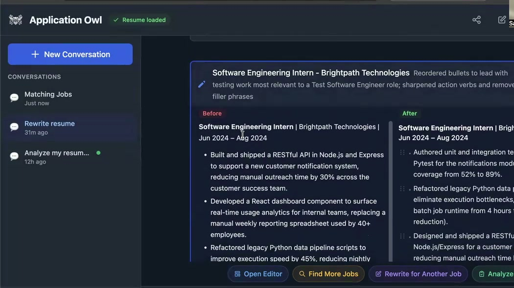

Most people apply to dozens of jobs with the same resume and wonder why nobody calls back. Application Owl analyzes each posting, tailors your resume to match, and prepares you for that specific interview. Not once. Every time you apply.
Try Free for 3 DaysMost people skip straight to applying. Owl starts by showing you where you're actually competitive, then tailors everything for each position you go after.
Got a resume? Upload it. Don't have one? Upload whatever you've got: a PDF, a Word doc, a list of past roles, even military fitness reports. Owl builds a professional resume from it.
Owl scores your competitive position across role types, seniority levels, and industries so you know where you have the strongest shot.
Get matched to open positions ranked by how well they fit your profile. No more guessing which jobs are worth your time.
Owl rewrites your resume for that specific posting, section by section, so it reads like you wrote it for that role.
Practice with questions based on that company's hiring rubrics. Get feedback on what to fix before the real thing.
Next position, same process. Fresh tailoring every time. That's why it's a subscription.
Get a detailed scorecard with section-by-section ratings, priority fixes, and actionable improvements. Know exactly what recruiters see.

Find open positions scored by how well they match your skills and experience. See exactly why each role fits your background.

Tailor your resume for a specific posting with AI-powered rewrites per section. See before and after, bullet by bullet.

Practice with questions and feedback based on real hiring rubrics.
Edit sections directly with a rich text editor and export as a polished PDF.
Plus: Weekly Live Q&A - Join Itay Sharfi live each week to get your job search questions answered.
"Recruiters started reaching out to me with my new LinkedIn. I have three interviews lined up and one is with Cisco."
"Most of the interviews I get are from recruiters who find me through my LinkedIn profile. Almost 100% of them. Thanks to your help improving it."
"I was selected for a Google phone interview for the Software Developer III role after your resume overhaul."
Built by Itay Sharfi - former Google PM, professor at Cal State Fullerton. 20+ years in tech at Google, Nokia, and HP.
| Feature | Generic Chatbot | Application Owl |
|---|---|---|
| Fact Reliability | May invent or miss facts | Grounded in real hiring data and kept current |
| Interview Prep | Scripted, generic Q&A | Questions and feedback based on real hiring rubrics |
| Resume Understanding | Generic, one-size-fits-all tips | Checks your resume the way a hiring team would |
| Job-Posting Context | Often overlooks details in job ads | Understands job ads from a curated list kept fresh |
Owl is built on real hiring experience and interview insights. It understands resumes, job fit, and interview rubrics the way a hiring team does. General chatbots give generic advice.
AI-powered resume analysis, job matching with curated tech openings, interview prep based on real rubrics, and a weekly live Q&A session with Itay Sharfi, former Google PM. Start with a 3-day free trial.
The Coached Plan adds direct access to Itay via email, personal resume rewrites, mock interview video analysis, and strategic guidance. Contact info@applicationowl.com for details.
Yes. No minimum commitment. Cancel before your next billing cycle.
More questions? Contact us at info@applicationowl.com